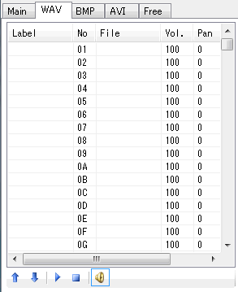

No
File
Vol.
Pan
BGM
Move up (
Move down (
Start Preview (
Stop PreviewStop (
Enable/Disable Preview (
| Tab properties |
|---|
| [WAV] tab |
"WAV tab" manages WAV cell list used in DTX score
WAV can handle 1295 WAV files(WAV cell).
Each WAV cells have the number 01-ZZ (36-decimal expression), and each cells have one label and one filename, volume and panpot value.
Please see "Sound property" to know how to specify these items.

Label
No
File
Vol.
Pan
BGM
Move up ( ）
）
Move down ( )
)
Start Preview ( )
)
Stop PreviewStop ( )
)
Enable/Disable Preview ( )
)
It shows the lavel named to the WAV cell.
In the DTX file, the lavel strings are used to the comments of #WAV command.
The number of WAV cell. It has the value 01-ZZ (36-decimal expression).
The chips drawn on the score are distinguished by the number.
The sound filename related to the WAV cell.
It is represented as the relative path from the DTX file you're making.
The volume value (0-100 [%]).
100% means the original sound volume. You can't specify the value over 100.
The panpot value (Left:-100 - Center:0 - Right:100) for the WAV cell.
Note that DTXMania uses DirectSound to change panpot.
So the changing panpot means simply the changing of the volume of Left/RIght channel independently.
"o" is shown if the WAV ceil is handled as a BGM.
It move up/down the WAV cell in the AVI cell list.
It causes the decrement/increment the number of the WAV cell,
and the chip's number on the score are also changed automatically.
You can preview the WAV sound by left-clicking the WAV cell.
You can also start/stop preview it by clicking Start Preview ( ) / Stop Preview (
) / Stop Preview ( ).
).
And you can enable/disable preview feature by Enable/Disable Preview ( ) button.
) button.